[리뷰] 홈서버와 HTPC를 동시에? 인텔 N100 프로세서 기반 미니 PC, Firebat AK2

2014년, ARM 아키텍쳐 기반 싱글 보드 컴퓨터(SBC)의 대중화를 일구었던 라즈베리파이 Model B+가 출시되었을 즈음 ‘나도 이거 하나 사서 장난감으로 가지고 놀아볼까…’ 하는 생각이 늘 있었습니다. 하지만 당시에는 그저 네트워크/임베디드/프로그래밍 교보재 정도의, 그다지 명확한 사용 목적이 없었던터라 불필요한 소비라는 생각에 구매를 오랫동안 미뤄왔습니다.
그러다가 2020년 코로나19 대유행이 터졌습니다. 산업 전반에 세계적인 물류 공급망 위기가 발생했고 당연히 라즈베리파이도 예외는 아니었습니다. 생산에 차질이 생기면서 공급은 확 줄었는데 그 부족한 공급마저도 대부분 산업용 수요로 흘러들어가 개인이 구매할 수 있는 물량이 없는 기간이 꽤나 길었는데요, 중고로 구매를 하려고 해도 매물도 적고 가격도 비싼 편이어서 결국 구매할 생각을 접었습니다. 2022년에는 Raspberry Pi Ltd.의 CEO 이븐 업턴(Eben Upton)이 “라즈베리 파이 5는 2023년엔 출시되지 않을 것입니다. 공급망 문제로 내년은 잠시 쉬어가는 기간”이라고 하기도 했고요.
그렇게 시간이 지나고 2023년 10월, CEO의 저 발언은 재고소진(?)용 블러핑이었고 결국 라즈베리파이 5는 출시되었습니다. 전반적으로 CPU, GPU, RAM의 성능이 향상되었는데 8GB 램을 탑재한 사양이 전작과 동일한 75달러에 판매되고 있습니다. 공급망이 개선되어 개인도 구매 가능한 물량이 준비되었다고 해서, 마침내 라즈베리파이를 하나 사볼까 하면서 마음이 기울고 있었습니다.
그런데 마침 비슷한 시기에 인텔 N100 프로세서를 탑재한 중국산 미니PC가 100달러 미만의 특가로 판매되기 시작했습니다. 인텔 Alder Lake-N 마이크로아키텍쳐 기반의 N100 프로세서의 경우 인텔 12세대 앨더레이크 일반 Core 시리즈 프로세서에서 고성능 P코어를 제외하고 고효율 E코어만 4개 가져온 구성을 가지고 있습니다. 스카이레이크 시절 Core i3 데스크탑 프로세서급의 우수한 성능을 가졌고, 최신 AV1 코덱으로 4K급 하드웨어 가속 디코딩까지 가능하면서도 TDP는 고작 6W밖에 안되는 혁신적인 초고효율 프로세서입니다. 이런 프로세서를 탑재한 미니 PC인데 베어본인것도 아니라서, 여기에 (정체불명 제조사의 싸구려 부품이라고는 하지만) 16GB DDR4 램과 512GB M.2 SATA SSD까지 포함해서 저 가격이라는게 믿기 어려울 정도입니다. 라즈베리파이가 도저히 따라올 수 없는 뛰어난 성능과 풍부한 구성과 저렴한 가격이었기에 고민을 할 필요가 없었습니다.
x64 아키텍쳐 기반의 미니 PC는 arm 아키텍쳐 기반의 라즈베리파이와는 달리 기존에 PC용으로 제작된 수많은 소프트웨어, 프레임워크, 라이브러리, 도큐멘테이션, 튜토리얼 등 풍부한 컴퓨팅 생태계를 있는 그대로 사용할 수 있다는 점에서 실용적이라는 생각이 들었습니다. 한편 라즈베리파이는 신제품이 출시될 때 성능이 향상되면서 소비전력도 함께 증가하는 경향을 보여왔는데, 라즈베리파이 5에서는 피크 소비전력이 12W에 달하면서 15W급의 전원 공급을 권장하기에 이르렀습니다. 이럴거라면 차라리 전력을 1.5배 사용하더라도 연산 및 그래픽 가속 성능이 압도적으로 뛰어난 x64 기반 미니 PC를 사용하는게 활용성이 좋겠죠. 서버 역할이라면 여러 서비스들을 동시에 구동할 수 있고, 그러면서 하드웨어 가속 디코딩을 사용해 고화질 영상 감상도 무리없이 가능하니까요. 그래서 할인 행사를 하자마자 곧바로 구매해버렸습니다.
사실 중국산 PC라서 보안 측면에서 매우 우려가 되기는 합니다만, 로우레벨 백도어같은건 PRISM이니 Intel Management Engine이니 뭐니 해서 미국도 마찬가지라서 일반인들은 어차피 피해갈 수가 없겠다는 생각입니다. 대다수의 평범한 사람들은 펌웨어 백도어를 통한 국가적 사이버전보다는 운영체제 레벨에서의 해킹 공격 표면을 막는게 더 중요하지 않나 싶습니다.
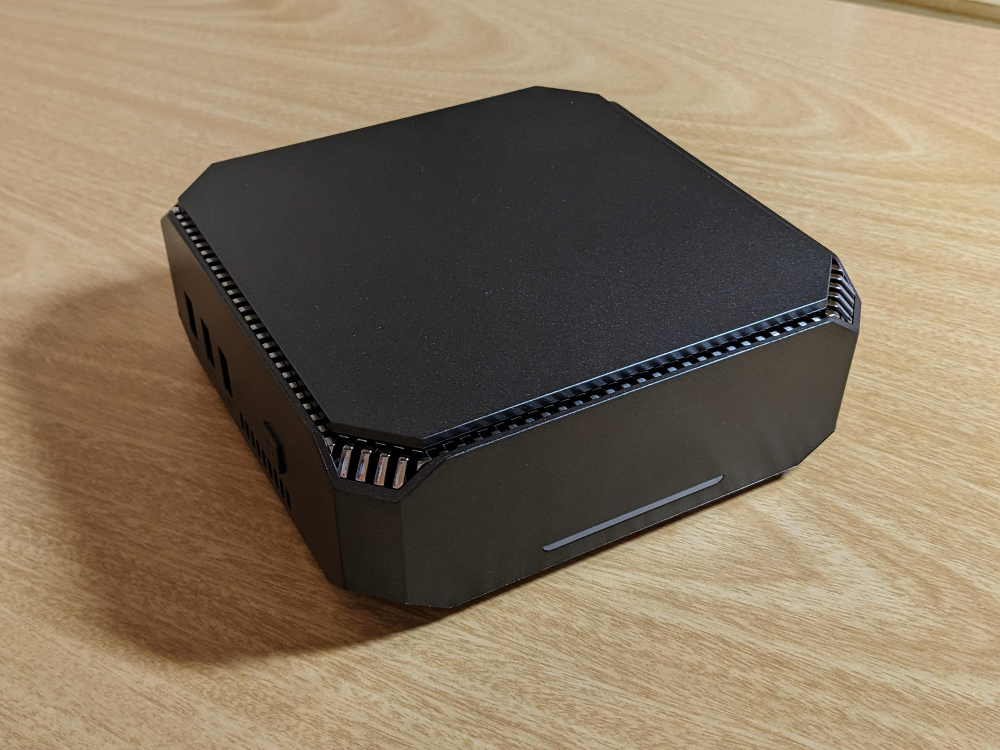
제품은 이렇게 생겼습니다. 차콜 색상에 은은한 펄감이 들어간 가벼운 플라스틱 재질의 본체입니다. 전면에는 상태 표시용 LED가 있는데 작동중일때는 파란색 불빛이, 절전 모드에서는 빨간색 불빛이 켜집니다. 오른쪽 측면에는 아무것도 없습니다.
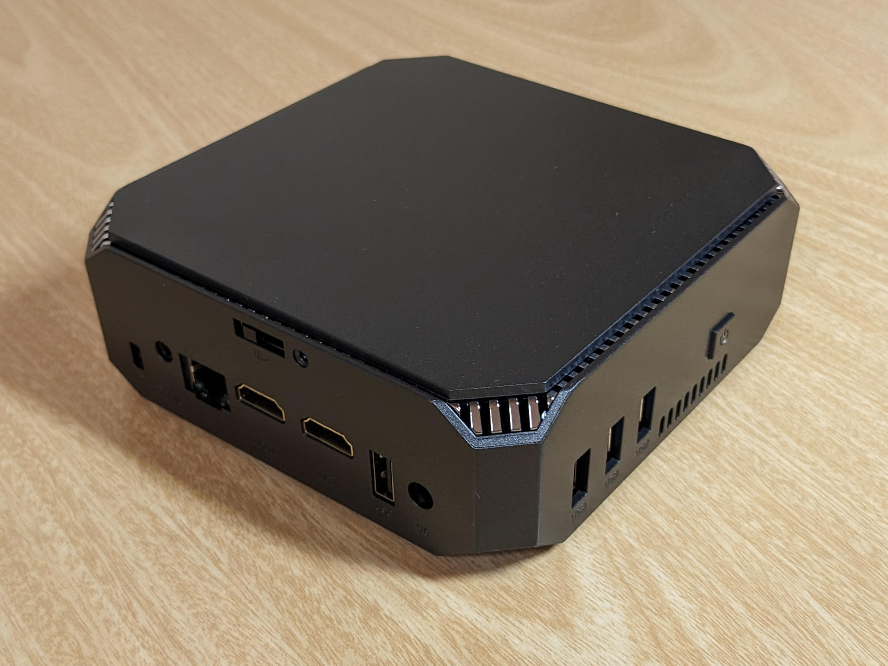
왼쪽 측면에는 전원 버튼과 USB 2.0 단자 1개와 USB 3.0 단자 2개가 있습니다. 후면에는 도난방지용 켄싱턴락, 3.5mm 오디오 출력 및 마이크 입력 콤보 단자, 유선 이더넷 단자, HDMI 단자 2개, USB 2.0 단자 1개, 전원 어답터 단자가 있습니다. HDMI 단자 위쪽으로는 상단 커버를 분리할 수 있는 래치가 있습니다.
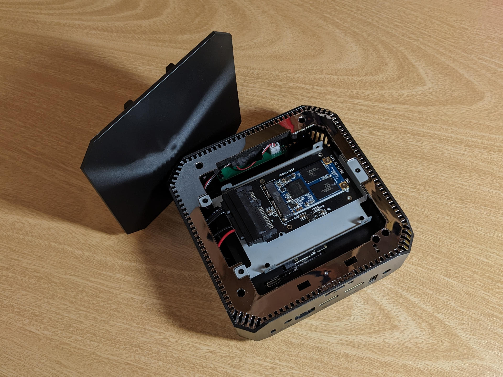
래치를 당긴 상태에서 뚜껑을 위로 열면 이렇게 2.5인치 SATA 베이가 나타납니다. 여기에다가 2.5인치 SATA HDD나 SSD를 추가로 끼워서 용량을 확장할 수 있습니다. 저는 아주 오래전에 하이브리드 HDD에서 적출해낸 20GB짜리 I/O 캐시용 mSATA SSD를 SATA 어댑터에 끼워서 연결해놨습니다. 여기 말고는 딱히 쓸일이 없네요. 케이스 내부에는 메인보드에 부착된 데이터 전용 USB Type C 단자도 하나 숨어있습니다. 구조상 케이스 밖으로 노출될 수가 없어서 그냥 내부에 방치해놓은 것 같은데, 나중에 ㄱ자로 생긴 90도 방향 전환 어답터를 하나 사면 무선키보드랑 마우스용 USB 수신기 같은거 연결해두는 용도로 써먹을 수 있을 것 같습니다.
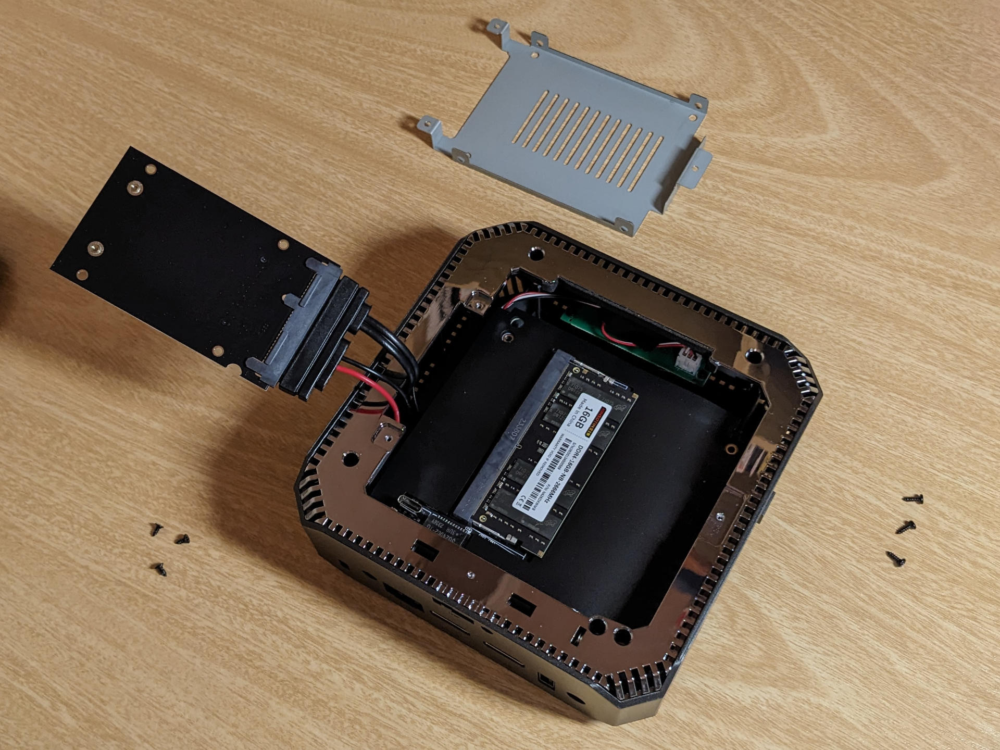
나사를 풀고 2.5인치 SATA 베이 브라켓을 분리하면 탈착식 싱글채널 램 슬롯이 보입니다.
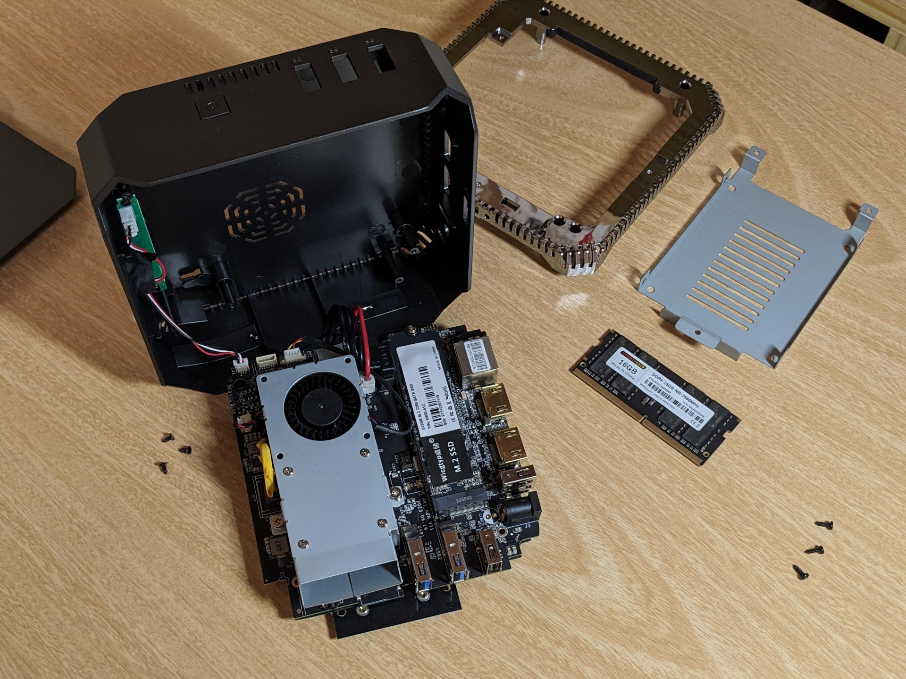
은색 유광 크롬 마감 처리된 플라스틱 재질의 미드프레임의 나사를 풀어 분리하면 메인보드가 나타나고, 메인보드를 뒤집으면 나머지 부품들이 보입니다. M.2 규격의 SATA 방식의 SSD 슬롯에는 중국산 싸구려 SSD가 탑재되어 있습니다. 리얼텍 무선랜 모듈은 메인보드에 납땜되어있는 온보드 방식으로 장착되어있는데 안테나 위치 때문인지 수신률이 좋은 편은 아니라고 합니다. 그리고 열 배출을 위해 블로워 팬이 장착되어 있는데 성능이 별로라고 하네요. 전체적으로 수월한 방열을 고려한 설계는 아니어서 케이스 안에 열이 갇혀있는 느낌이라고 보시면 됩니다.
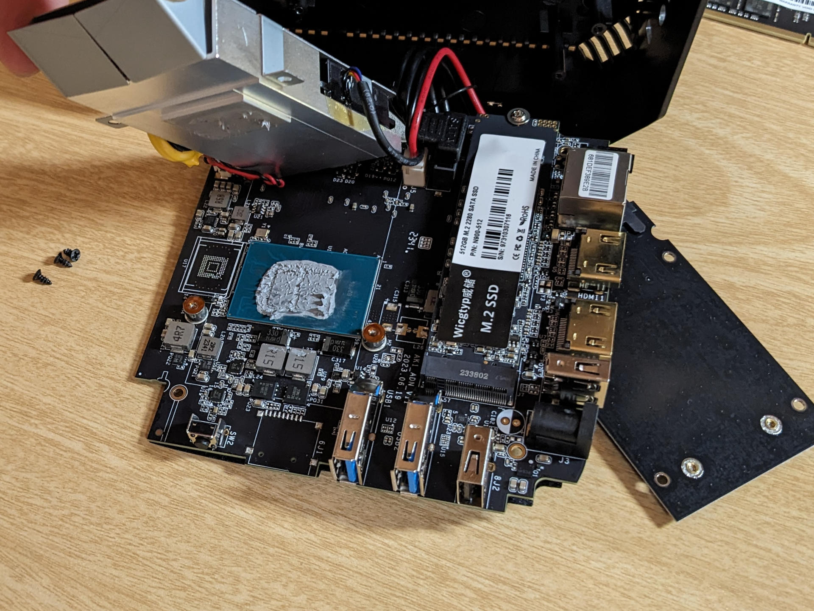
오래 전에 생산된 재고 상품이어서 그런지 아니면 그냥 극단적 원가절감을 위해 싸구려 똥써멀을 사용해서 그런지, 다른 사람들의 사용기를 보니까 CPU에 도포된 써멀 컴파운드가 돌처럼 완전히 굳어있어서 닦아내는데 힘들었다고 하더라고요. 가뜩이나 방열 설계가 좋지 않은 제품인데 써멀 컴파운드라도 제대로 발라줘야겠다 싶어서 블로워 팬을 분리해봤습니다. 역시나 싸구려 똥써멀을 CPU에 범벅을 해놔서 기판에도 묻어있었습니다. 다만 제가 구입한 제품은 다행히도 2023년 10월 생산품이라고 팬 측면에 스티커가 붙어있었고, 꾸덕하게 굳어있기는 해도 면봉으로 닦아낼 수 있는 수준이었습니다.
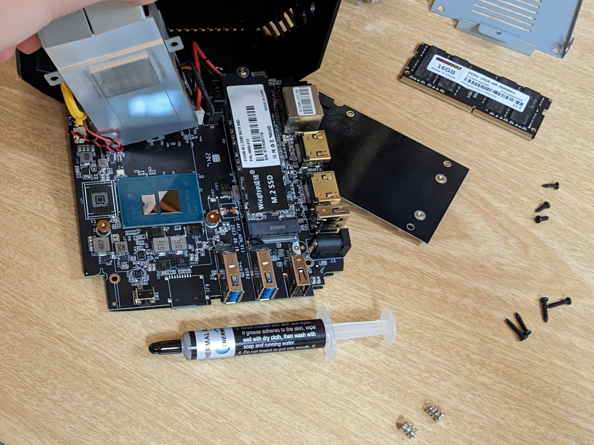
똥써멀을 싸악 닦아내고 제대로 만든 보급형 써멀 컴파운드인 써모랩 M2를 적절하게 극소량만 도포해줬습니다. 조립은 분해의 역순입니다.
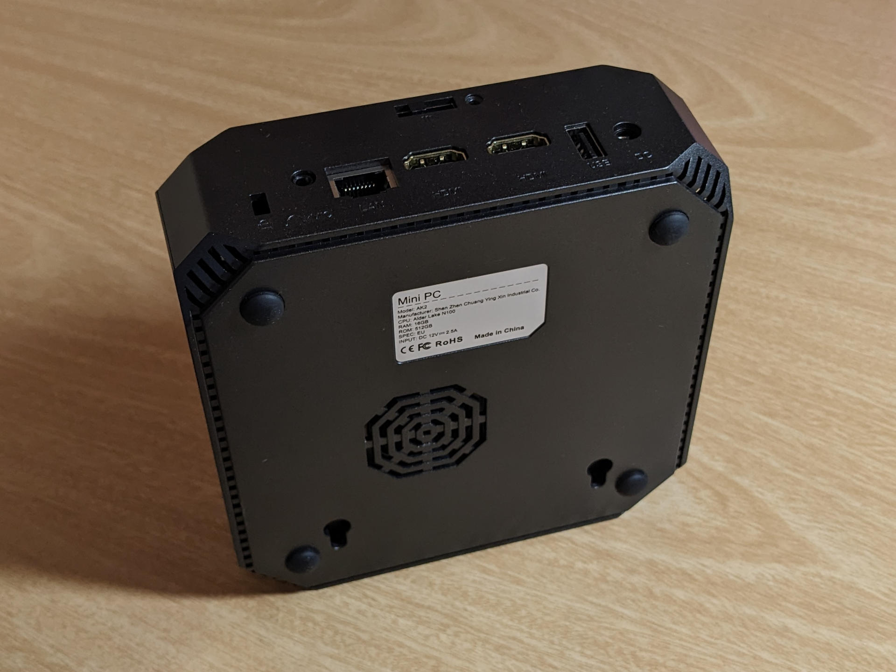
본체 하단에는 이렇게 방열을 위한 타공처리가 되어있습니다.
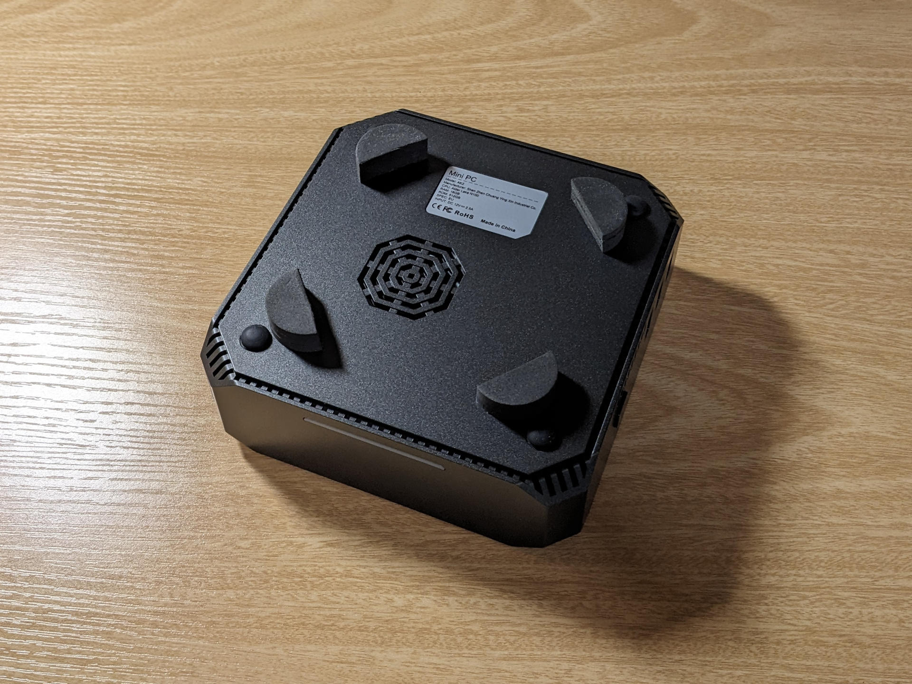
발열 해소에 도움이 될까 싶어서 이렇게 EVA 재질의 피트를 양면스티커로 붙여서 본체를 지면으로부터 띄워주었습니다. 베사홀 브라켓을 사용해서 TV 모니터 뒤에다가 장착하게 되면 필요 없는 부분이지만, 일단은 HTPC보다는 홈서버 목적이 우선이라 여러 장비들을 연결했다 해제할 일이 많을 것 같아 셋탑박스 형태로 거치하려고 합니다.
아무튼 이런 제품이고, 다방면으로 활용하기에 라즈베리파이보다 훨씬 좋은 미친 가성비의 제품이라는건 알겠는데 여전히 확실한 사용 목적은 없었습니다. 그래서 ‘학습용 장난감’을 넘어서 ‘생활 가전’으로 본격적으로 활용할 방법이 어떤 것들이 있는지 이것저것 찾아보고 생각해봤습니다.
- FTP 서버를 구동해 개인용 클라우드 스토리지로 사용하기
- Home Assistant를 사용해 개인용 사물인터넷 및 자동화 허브로 활용하기
- 각종 SaaS 웹 서비스들을 구동해 클라우드 기반 개인용 생산성 소프트웨어들을 사용하기
- Jellyfin을 사용해 개인용 비디오 스트리밍 서비스로 활용하기
- 대형 모니터에 연결해 스마트TV로 활용하기
- 유튜브 클라이언트인 Freetube 설치
- HTPC 애플리케이션인 Kodi 설치
- 파이썬 서버를 구동해 REST API 기반 자동 알고리즘 주식투자 시스템으로 활용하기
- Zoneminder를 활용해 가정용 동작감지형 CCTV 시스템 구축하기
저런 목적으로 사용하는데 윈도우즈가 굳이 필요하지는 않아서 당연히(?) 리눅스를 설치하려고 합니다. 아무리 인텔 N100의 성능이 구형 데스크탑 프로세서급으로 우수하다고는 해도 저전력에 초점이 맞춰진 보급형 제품이라서 성능이 엄청 넉넉하지는 않습니다. 대부분의 리눅스 배포판들에 비하면 윈도우즈는 운영체제 그 자체로도 꽤나 무겁기 때문에, 조금이라도 불필요한 부하를 줄이고 컴퓨팅 자원을 최대한으로 활용하기 위해서는 리눅스가 적절한 선택입니다. 무엇보다도 서버 구축하고 프로그래밍도 동원하고 하는데는 네이티브 리눅스가 훨씬 편하더라고요. 사이버 보안이라는게 상당히 복잡합니다만 적어도 일반 사용자들을 대상으로 하는 대다수의 윈도우즈용 악성코드가 무효화되고 운영체제 차원에서 각종 권한 관리 및 격리는 확실하게 되어 있다는 측면에서도 리눅스가 조금이라도 좋을거고요.
그리고 인텔은 오픈소스 친화적이라 대부분의 드라이버들을 리눅스용으로 개방해주기 때문에 리눅스에서의 하드웨어 호환성도 좋습니다. 자체 브랜드나 기술지원 없이 하드웨어만 찍어내는 이런 화이트박스 제품들의 경우에는 삼성, LG, HP, 델, 레노보같은 전문적인 대기업과는 달리 윈도우즈용 하드웨어 드라이버를 관리하고 검증하는 주체가 없다보니, 사용자가 직접 출처불명의 OEM 드라이버들을 여기저기서 구해서 직접 호환성 테스트를 하지 않으면 윈도우즈에서 모든 성능과 기능을 100% 사용하지 못하는 경우도 발생하고는 합니다. 안그래도 어떤 미니PC 사용기에서는 설치된 OEM 드라이버 종류랑 버전에 따라서 윈도우즈에서 4K 60fps HDMI 출력이 되지 않는 경우도 있다고 하네요.
아무튼 리눅스를 사용하기로 했으면 이제 배포판을 선택해야 합니다. 일반적인 용도로 사용하는 컴퓨터였다면 그냥 무난하게 우분투를 선택했을텐데, 이건 아무래도 24시간 켜놓는 서버 용도로도 사용을 해야하니 최대한 가볍고 안정적인 배포판이 필요하다는 생각이 들었습니다. 다만 안정성을 중시하는 리눅스 배포판의 경우 충분한 테스팅을 거친 구버전 커널을 사용하는 경향이 있는데, 인텔 N100은 최신 제품이다보니 하드웨어 호환성에 문제가 있을수도 있겠다는 생각이 들었습니다. 이런 측면까지 고려해서 여러가지로 리서치를 해봤고 Xubuntu, CentOS, Linux Mint 등의 후보군 중에서 최종적으로 Debian을 선택했습니다.
- 메인스트림 배포판으로써 검증된 품질과 생태계
- 기업용 서버 배포판에 비해 기술지원이 부족하지만 높은 안정성과 보안을 추구하므로 개인용 홈 서버 용도로 적절함
- GNOME 데스크탑 환경을 함께 사용하면 서버 뿐만 아니라 멀티미디어 컨텐츠용 스마트TV로 사용하기에도 인터페이스가 괜찮음
- (HTPC용 리모콘형 미니 키보드로 조작하려고 합니다)
- 많은 소프트웨어들이 데비안용 deb 패키지를 제공
- 기존에 개인 PC용으로 오랫동안 사용해오던 우분투의 원조가 데비안이므로 사용하기에 익숙함
- 최신 버전인 Debian Bookworm이 인텔 N100 플랫폼을 지원한다는 사용기를 확인함
그리고 발열과 전력소모에 대해서도 다시 생각해봐야 하는데요, 하루종일 켜져있는 컴퓨터다보니 온도가 낮아야 부품 수명이 길고 전력소모가 낮아야 전기요금이 저렴하니까요. 구매 전에 인텔 N100 기반 보급형 미니 PC들의 사용기를 인터넷에서 찾아보니 이 제품 뿐만 아니라 대부분의 제품들이 케이스라던가 부품 배치같은 방열 설계가 거지같이 되어 있고 쿨링팬의 성능도 좋지 않아서 발열 해소가 잘 되지 않는다는 평가가 많았습니다. 그리고 중국산 화이트박스 전자제품들은 회로 설계와 부품 품질이 그다지 좋지 않은 경우가 많기 때문에 조금이라도 성능을 높이는 것 보다는 발열을 해소해서 고장날 확률을 줄이는게 훨씬 중요하는 의견이 다수였고요. 그래서 UEFI에서도 발열과 전력소모를 낮추기 위해 몇가지 설정을 해줘야 할 부분이 있습니다.
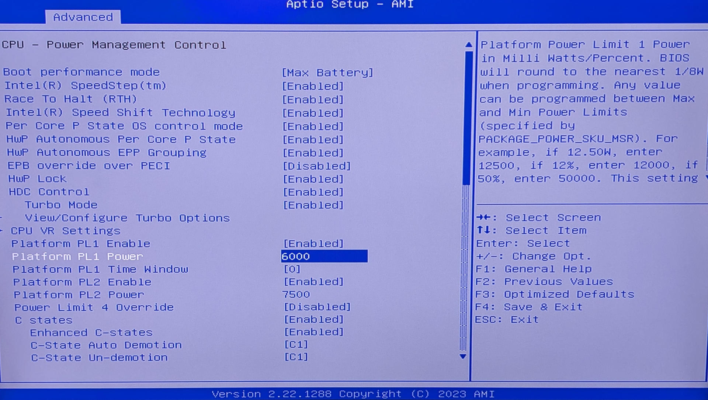
Firebat AK2는 American Megatrend의 Aptio UEFI를 탑재하고 있습니다. 상당히 광범위하고 테크니컬한 설정들을 제공하고 있는데요, 여기서 일반적인 작동 수준에서의 전력량인 Power Level 1과 고성능을 뿜어내는 터보 부스트 클럭의 전력량인 Power Level 2을 수동으로 지정해줄 수 있습니다. 인텔 N100의 경우 6W의 설계 TDP를 가지는데, Firebat AK2를 제조한 OEM에서는 PL1과 PL2 모두 10W 기준, 즉 10000을 기본값으로 지정해 두었습니다. 성능을 최대한 쥐어짜내려고 한 것 같습니다. 그래서 저는 PL1 수치를 6W 기준인 6000으로, PL2 수치를 7.5W 기준인 7500으로 프로세서 본래의 써멀 설계 수준에 맞게 낮춰놨습니다. 어차피 서버라고 해봤자 접속하는 클라이언트도 얼마 안되고 부하량도 적을거라서 이렇게 제한해도 성능적인 문제는 없을 것 같다는 생각입니다. UEFI에서 CPU 전력 설정을 이렇게 해주고 데비안에서는 성능 모드를 저클럭/절전 지향인 Power Saver로 바꿔주니까 겨울철 기준 idle 상태 온도가 섭씨 42도 전후를 유지하고 있었습니다. 여름철에는 49도 전후까지 올라가겠다 싶네요.
이렇게 기본적인 세팅은 마무리되었고, 이제 본격적으로 홈서버 및 HTPC로 활용하기 위해서 추가적인 학습과 실습을 해보려고 합니다.
*내용 추가
미니 PC를 영상감상용 HTPC로도 활용하기 위해서 터치패드가 달린 2.4GHz 무선 미니 키보드도 하나 구입을 했습니다. i8 mini wireless remote touchpad keyboard 뭐 이런 제품명으로 알리익스프레스에서 1.5달러라는 미친 가격으로 팔더군요.
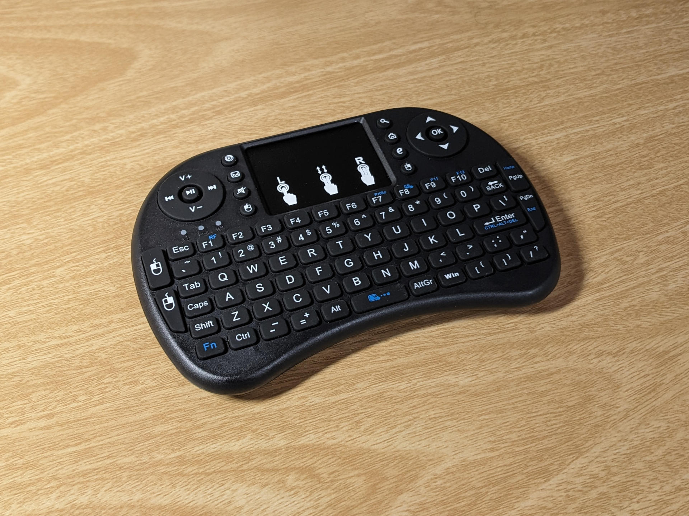
이렇게 생긴 제품이구요, 가격을 생각하면 당연하게도 싸구려 플라스틱 재질에 마감도 좋지는 않습니다. 플라스틱 냄새가 심해서 날려보내는데 2주 넘게 걸렸네요. 전면에는 키보드와 터치패드가 있고, 절전 모드 여부, 배터리 부족, 무선 신호 접속 여부를 알려주는 LED들도 자리잡고 있습니다. TV 리모컨처럼 부드러운 실리콘 재질의 버튼이 스위치를 또각또각 경쾌하게 누르는 느낌의 키보드는 의외로 괜찮았습니다. PC에서 사용되는 필수 기능키들과 멀티미디어 키들도 충실하게 제공하고 있어서 기능성도 좋고요. 터치패드도 반응이 뛰어나지는 않지만 커서를 무난하게 음직이고 무려 멀티핑거 제스쳐까지 지원해서 생각보다 쓸만했습니다. Fn키와 스페이스바를 같이 누르면 2단계로 터치패드 감도 조절까지 됩니다.
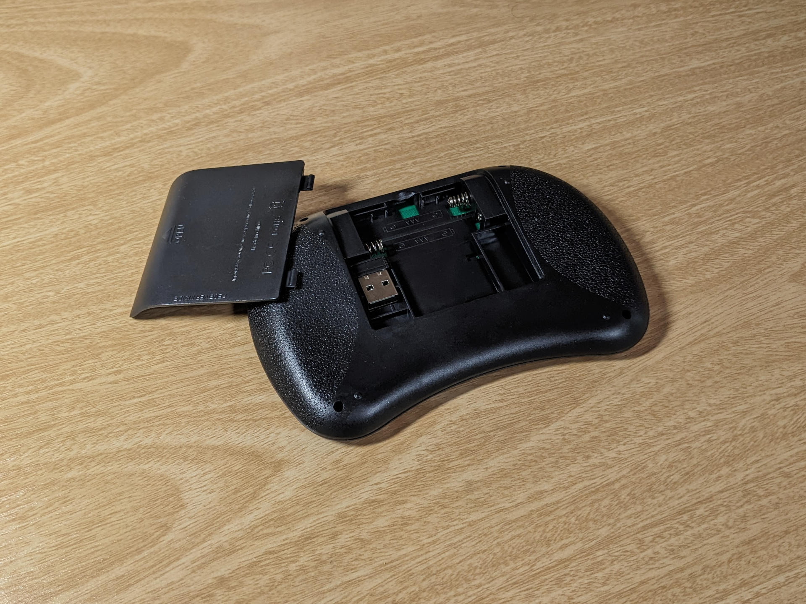
후면에는 이렇게 커버를 분리하면 AAA 알카라인 배터리 2개를 장착하는 슬롯이 있구요, 2.4Ghz 무선 USB 리시버가 수납되어 있습니다. 사진에서는 잘 보이지 않지만 상단에는 ON/OFF 스위치가 있어서 사용하지 않을때는 완전히 전원을 끌 수가 있습니다. 상단에는 MicroUSB 단자도 달려있는데 이거는 알카라인 배터리가 아닌 충전식 배터리를 사용하는 고급형 모델과 동일한 기판을 사용했기 때문에 달려있는거고 실제로는 아무 기능도 없습니다.
저렴한 가격의 싸구려 제품인것에 비해서 수신 감도도 좋고 기능도 많고 작동도 잘 되서 HTPC용으로 사용하기 좋은 제품입니다.